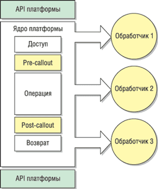

Алексей Назаров,
руководитель отдела разработки ПО SoftLine Solutions
AlekseyN@softline.ru
Microsoft CRM (Customer Relationship Management) - это решение для управления взаимоотношениями с клиентами, которое использует технологии Microsoft .NET для автоматизации каждодневных задач продавцов, сотрудников сервисных служб и call-центров, маркетологов.
Как любой инструмент, Microsoft CRM имеет определенные базовые функциональные возможности. Этих возможностей, как правило, достаточно для того, чтобы удовлетворить большую часть потребностей типичной организации. Однако практически любая организация имеет свои специфические требования, которые не покрываются функционалом Microsoft CRM. Трудно также представить себе современную организацию, которая не пользовалась бы электронными приложениями для решения бизнес-задач. Возможно, функции некоторых таких приложений может взять на себя Microsoft CRM. Другие приложения, например, бухгалтерские системы или системы управления предприятием, должны работать совместно с Microsoft CRM, образуя единый комплекс. Для более эффективной работы организации может потребоваться интеграция этих приложений с Microsoft CRM.
Общее представление об архитектуре Microsoft CRM
Какие же конструктивные особенности обеспечивают Microsoft CRM возможности для расширения функциональности и интеграции с другими приложениями? В первую очередь это многослойная архитектура, где функции каждого слоя четко определены и взаимодействие между слоями имеет клиент-серверный характер. Иными словами, каждый нижележащий слой выступает провайдером данных для вышележащего слоя. Таких слоев в общем случае выделяется четыре - слой представления, слой приложения, платформа Microsoft CRM, или слой бизнес-логики, а также слой доступа к данным. Обзор архитектуры Microsoft CRM можно найти в статье "Microsoft CRM: архитектура и возможности" ("BYTE/Россия" № 10'2004).
В данной статье мы остановимся только на тех особенностях архитектуры Microsoft CRM, которые непосредственно обеспечивают работу механизмов расширения функциональности и позволяют интегрировать систему с другими приложениями. Эти механизмы работают в трех верхних слоях системы.
Слой представления. Как говорилось выше, Microsoft CRM имеет клиент-серверную архитектуру. Клиентом в данном случае может быть Internet Explorer либо Outlook. Оба приложения используются для отображения пользовательского Web-интерфейса Microsoft CRM и для выполнения клиентских сценариев на языке JavaScript. Microsoft CRM имеет встроенные инструменты, позволяющие добавлять в клиентский код собственные сценарии. С их помощью разработчики могут выполнять необходимые действия в ответ на события в клиентском приложении пользователя.
Слой приложения. Данный слой - это Web-приложение, которое генерирует большую часть клиентского кода и доставляет его для обработки в слой представления. Слой приложения Microsoft CRM использует конфигурационные XML-файлы для настройки параметров приложения и элементов пользовательского интерфейса, которые необходимы для расширения функционала Microsoft CRM.
Платформа (слой бизнес-логики). Для описания объектов и их связей в Microsoft CRM используются метаданные, хранимые отдельно от данных Microsoft CRM. Такое решение позволяет легко расширять и обновлять систему без изменения программного кода, а также регистрировать в базе метаданных обработчики событий для объектов Microsoft CRM. При возникновении одного из событий - создания, обновления или удаления экземпляра объекта (например, компании) - слой платформы проверяет, нет ли в базе метаданных зарегистрированных обработчиков соответствующего события. В зависимости от типа зарегистрированного обработчика он может выполнять либо определенные бизнес-правила в контексте бизнес-процесса, либо пользовательскую бизнес-логику. Второй тип обработчика события используется встроенным механизмом callout, разработанным для интеграции Microsoft CRM с внешними приложениями.
Пользовательские настройки и интеграция
Проекты настройки и интеграции Microsoft CRM варьируются от достаточно простых до очень сложных. Большинство пользовательских настроек Microsoft CRM можно выполнить при помощи внутренних инструментов конфигурирования и настройки. На рис. 1 эти инструменты представлены слева.
| Рис. 1. Варианты модификации Microsoft CRM и интеграции c приложениями сторонних разработчиков.
|
Более сложные расширения базовой функциональности, равно как интеграция Microsoft CRM с другими приложениями, требуют использования Microsoft CRM SDK (Software Development Kit). Microsoft CRM SDK - это набор документов, описывающих архитектуру, объекты Microsoft CRM, программные интерфейсы и другие параметры, необходимые разработчикам.
Программные решения для интеграции Microsoft CRM с приложениями сторонних разработчиков можно условно разделить на три типа.
Самый общий тип интеграции - "коммуникация" между Microsoft CRM и другим приложением. Он обычно подразумевает либо простое отображение данных из одной системы в другой, либо полную коммуникацию двух приложений, позволяющую просматривать и изменять данные из любого интегрируемого приложения. Это решение подразумевает автоматическую синхронизацию данных в базах данных интегрируемых приложений. Такими приложениями могут быть, например, Microsoft CRM и сайт электронной коммерции компании, откуда данные о пользователях, оформивших заказ, и параметры самого заказа заносятся в Microsoft CRM.
Второй тип интеграции, "расширение", подразумевает наращивание возможностей Microsoft CRM за счет включения в него функциональности другого приложения. Например, разработчики могут создать Web-приложение для аудита данных Microsoft CRM и встроить это приложение в интерфейс Microsoft CRM.
И, наконец, третий тип - "включение" Microsoft CRM в другое приложение. Это в наибольшей степени комплексная интеграция, при которой Microsoft CRM используется как часть более масштабной системы. Данный тип интеграции чаще всего применяется при создании комплексных индустриальных решений. Примером может служить интеграция Microsoft CRM в систему управления предприятием как отдельной функциональной части, автоматизирующей работу отдела продаж.
Механизмы расширения функциональности и интеграции
Microsoft CRM предоставляет разработчикам несколько механизмов расширения функциональных возможностей и интеграции:
- формы по ссылке;
- событие OnChange;
- файлы конфигурации isv.config и OutlookClient.xml;
- действие PostURL;
- механизм callout;
- Web-сервисы Microsoft CRM.
Из рис. 2 видно, что эти механизмы работают на разных уровнях системы. Механизмы, работающие на уровне представления, активируются непосредственно пользователем Microsoft CRM из клиентского кода. Файлы настройки isv.config и OutlookClient.xml, расположенные на Web-сервере, работают на уровне приложения.
| Рис. 2. Уровни действия механизмов расширения функциональности и интеграции Microsoft CRM.
|
Механизмы, действующие на уровне платформы Microsoft CRM (или уровне бизнес-логики), активируются при возникновении в системе событий, для которых в базе метаданных Microsoft CRM зарегистрированы обработчики. При этом, в зависимости от типа зарегистрированного обработчика, либо запускается определенный бизнес-процесс, из которого можно обратиться к внешнему приложению посредством действия PostURL, либо происходит обращение к специальному callout-компоненту, в котором прописывается пользовательская бизнес-логика. Эти два механизма реализуют модель, которая позволяет инициировать обращение к внешнему приложению при возникновении события в Microsoft CRM. Возможна также реализация модели, при которой внешнее приложение будет работать с объектами Microsoft CRM посредством Web-сервисов. Существование в системе обеих моделей дает широкие возможности для интеграции Microsoft CRM с другими приложениями.
Два из существующих в Microsoft CRM механизмов расширения функциональности активируются из клиентского кода в Internet Explorer или Outlook.
Первый такой механизм, формы по ссылке, дает возможность размещать ссылки на формы Microsoft CRM во внешних Web-приложениях. Каждая форма представляет собой Web-страницу, к которой можно получить доступ по адресу URL. В Microsoft CRM SDK описаны правила формирования URL, по которому вызывается форма для ввода нового экземпляра объекта CRM либо для просмотра уже существующей записи. Данный механизм основан на стандартных HTML-средствах создания ссылок. Этот простой, но эффективный способ позволяет расширять функциональность Microsoft CRM, например, путем создания Web-страниц, в которых используются ссылки на формы Microsoft CRM, и интеграции этих страниц в пользовательский интерфейс Microsoft CRM.
Второй механизм расширения функциональности, активируемый из клиентского кода, - формы Microsoft CRM. Он разрабатывался таким образом, чтобы разрешить использование события OnChange для модификации процесса ввода данных. Это значит, что разработчик может добавить инструкции для пользователя, чтобы быть уверенным в правильности ввода данных, или дать возможность пользователю быстро добавлять данные в другие поля формы.
Формы Microsoft CRM предоставляют место для добавления кода JavaScript для события OnChange для любого списка выбора (drop-down list), расположенного на форме. Данный код будет запущен, когда пользователь изменит значение такого списка выбора.
Событие OnChange может служить для решения различных задач, например, для генерации сообщения, предупреждающего пользователя о наличии специальных требований при выполнении задачи. Так, при выборе типа контакта в списке выбора, расположенном на форме контакта, событие OnChange может вызвать для пользователя окно предупреждения с информацией о том, что контакт с типом "партнер" может вводить только менеджер.
Еще одна задача - установка значения другого поля на форме. Например, когда пользователь в списке выбора изменяет значение в поле "Рейтинг возможности", поле "Вероятность завершения" может заполняться автоматически на основании того значения, которое пользователь выбрал в поле "Рейтинг возможности".
Возможно также вычислить значение другого поля на форме на основании информации, полученной из внешних источников. Например, когда пользователь создает заказ и выбирает способ доставки заказа клиенту, возможно обращение к внешней базе данных, чтобы найти стоимость доставки для данного способа, размера заказа, его веса и удаленности клиента. Поскольку событие OnChange происходит на клиентской стороне, код JavaScript должен обращаться к серверному ресурсу, такому, как страница .aspx или Web-сервис, для получения данных из базы данных или Web-процесса.
Для вызова дополнительных функциональных возможностей в Microsoft CRM, как правило, необходимо добавить в пользовательский интерфейс дополнительные кнопки, меню или закладки. Эту задачу в системе выполняет еще один механизм расширения функциональности, который работает на уровне приложения. Он настраивается через конфигурационные файлы формата XML. Два таких файла - isv.config (для клиента IE) и OutlookClient.xml (для Outlook-клиента) - описывают конфигурацию указанных элементов пользовательского интерфейса. Дополнительные кнопки, закладки и меню можно настроить для вызова внешних Web-ресурсов, таких, как Web-страницы или Web-сервисы, которые могут выполнять определенную пользовательскую бизнес-логику или отображать некоторые дополнительные данные, необходимые пользователям.
Следующий механизм расширения функциональности, действие PostURL, работает на уровне платформы Microsoft CRM. Это действие позволяет посылать URL-запрос, содержащий данные Microsoft CRM, на определенный адрес. Например, с помощью действия PostURL, активируемого при создании новой записи о компании, можно вызвать Web-сервис и передать ему необходимые данные, чтобы рассчитать ценность компании-клиента для бизнеса. После выполнения операции Web-сервис может сохранить результат в Microsoft CRM. Действие PostURL может активироваться автоматически из бизнес-процессов (workflow), которые настраиваются для большинства объектов Microsoft CRM.
Интеграция с другими приложениями
Microsoft CRM предоставляет два способа интеграции с другими системами. Первая парадигма основана на использовании сервера Microsoft BizTalk Server. Этот сервер отвечает в схеме интеграции за маршрутизацию и трансформацию сообщений, которыми обмениваются системы. Использование сервера интеграции BizTalk - это достаточно обширная тема, требующая отдельной статьи, поэтому здесь мы основное внимание уделим варианту интеграции Microsoft CRM без использования BizTalk Server.
В Microsoft CRM существуют механизмы, обеспечивающие двухстороннюю интеграцию Microsoft CRM с внешними приложениями. Это Web-сервисы Microsoft CRM и механизм callout.
Web-сервисы Microsoft CRM
Архитектура Microsoft CRM предполагает, что доступ к программным интерфейсам объектов Microsoft CRM может осуществляться удаленно через протокол SOAP, поскольку каждый объект Microsoft CRM представляет собой Web-сервис (рис. 3).
| Рис. 3. Взаимодействие внешних приложений с Microsoft CRM через Web-сервисы.
|
Например, необходимо разработать для сайта компании страницу, на которой пользователи будут регистрироваться для получения новостной рассылки. При этом можно реализовать на Web-странице код, который будет добавлять новые контакты в базу данных Microsoft CRM при регистрации новых пользователей на сайте. Этот код посредством прокси-класса обращается к соответствующему Web-сервису Microsoft CRM, который предоставляет объект "Контакты", создает новый экземпляр объекта с заданными атрибутами и сохраняет его в Microsoft CRM. Таким образом, с помощью Web-сервисов можно интегрировать различные приложения с Microsoft CRM.
Кроме того, посредством Web-сервисов Microsoft CRM стороннее приложение может получать данные из этой системы. В качестве примера приведем интеграцию Microsoft CRM с приложением Microsoft Office InfoPath 2003. Это приложение служит для отображения информации из различных источников в динамических формах, что позволяет решать задачи совместного использования информации сотрудниками.
Механизм callout
Microsoft CRM предоставляет разработчикам простой механизм для внедрения в приложение пользовательской бизнес-логики - модель callout. В то же время сallout - это достаточно мощный механизм, который можно применять для интеграции Microsoft CRM с другими приложениями. С его помощью разработчики могут выполнять собственную бизнес-логику в ответ на события Create, Delete и Update объектов Microsoft CRM. Работа этого механизма основана на вызове специального компонента COM+, выполняющего пользовательскую бизнес-логику при возникновении указанных событий.
При создании, изменении или удалении записи Microsoft CRM выполняется ряд последовательных действий, таких, как проверка прав пользователя на совершение данной операции, выполнение самой операции над записью и т. д. Последовательность этих действий можно представить в виде простой модели pipeline (конвейера). Механизм callout в процессе выполнения данной последовательности операций позволяет перехватывать управление и выполнять собственную бизнес-логику как до выполнения основной операции над объектом Microsoft CRM, так и после. В метаданных платформы Microsoft CRM сохраняется информация о каждом объекте, в том числе и список callout-обработчиков, зарегистрированных для определенного объекта и определенного события.
Например, объект "Компании" может иметь несколько зарегистрированных callout-обработчиков. Эти обработчики сохраняются в том порядке, который определен приоритетом вызова. Когда происходит событие, например, создание новой записи о компании, платформа проверяет наличие в метаданных зарегистрированных обработчиков для объекта "Компании". Если обработчик зарегистрирован для соответствующего события, платформа создает объект обработчика и вызывает нужный метод данного объекта, передавая ему в качестве параметров тип объекта, его ID и XML-документ с данными по объекту. На рис. 4 приведен пример конвейера бизнес-логики, использующего механизм callout.
|  | Рис. 4. Последовательность операций при вызове пользовательских обработчиков событий Microsoft CRM.
|
Если для объекта зарегистрирован обработчик пользовательского события pre-callout, то он вызывается до выполнения основной операции над объектом. Если используется обработчик пользовательского события post-callout, то он будет вызван после совершения основной операции над объектом.
Архитектура интеграционного решения
На рис. 5 приведена типовая схема интеграции Microsoft CRM со сторонними приложениями без использования BizTalk Server. Интегрируемые приложения совместно используют некоторые данные, причем эти данные могут изменяться либо в одном из приложений, либо в обоих.
| Рис. 5. Схема интеграции Microsoft CRM со сторонними приложениями.
|
Например, требуется интегрировать Microsoft CRM с приложением back office. Оба приложения должны иметь согласованную клиентскую базу, причем работа с данными может осуществляться из обоих приложений. Когда в приложении back office создается, редактируется или удаляется запись об организации или контакте, соответствующую операцию необходимо выполнить и в Microsoft CRM. Для этого приложение back office должно создать экземпляр прокси-класса для доступа к Web-сервису Microsoft CRM, представляющему объект "Организации" или "Контакты", и вызвать соответствующий метод Web-сервиса, передав ему в качестве параметров необходимые данные. Если же запись об организации создается, редактируется или удаляется в Microsoft CRM, то вызывается соответствующий метод зарегистрированного для данного события компонента callout, на вход которого передаются тип записи, ее ID, а также XML-документ с данными об организации или контакте.
Полученные данные компонент callout помещает в очередь сообщений Microsoft Message Queue (MSMQ) в виде сообщения. После этого компонент готов к обработке новых запросов. Таким образом, MSMQ позволяет организовать асинхронную и гарантированную передачу данных из Microsoft CRM в стороннее приложение. Приложение back office периодически опрашивает очередь сообщений. При наличии в ней сообщений приложение обрабатывает присланную информацию и создает, обновляет или удаляет записи об организацияx или контактах, которые были созданы, обновлены или удалены в Microsoft CRM.
Некоторые итоги
Архитектура Microsoft CRM, ориентированная на Web-сервисы, позволяет строить действительно распределенные решения на платформе Microsoft CRM.
Открытые программные интерфейсы приложения (API) и встроенные механизмы интеграции позволяют решать задачи расширения функциональных возможностей Microsoft CRM, интеграции системы с любыми электронными приложениями и даже разработки собственного CRM-приложения на платформе Microsoft CRM.
Гибкая архитектура Microsoft CRM позволяет разработчикам не только интегрировать систему с другими приложениями, но и включать Microsoft CRM в комплексные системы автоматизации и управления в качестве отдельного функционального модуля.
Наряду с использованием современных Web-ориентированных технологий - XML Web-сервисов, ASP.NET - в приложении используются и такие традиционные и проверенные технологии, как COM+. В комплексе они обеспечивают полный набор возможностей для разработки эффективных решений на базе Microsoft CRM.
Таким образом, Microsoft CRM предоставляет широкие возможности для расширения функциональности и интеграции с другими приложениями, что в конечном счете позволяет выстраивать решения, наилучшим образом отвечающие специфическим бизнес-потребностям организации.